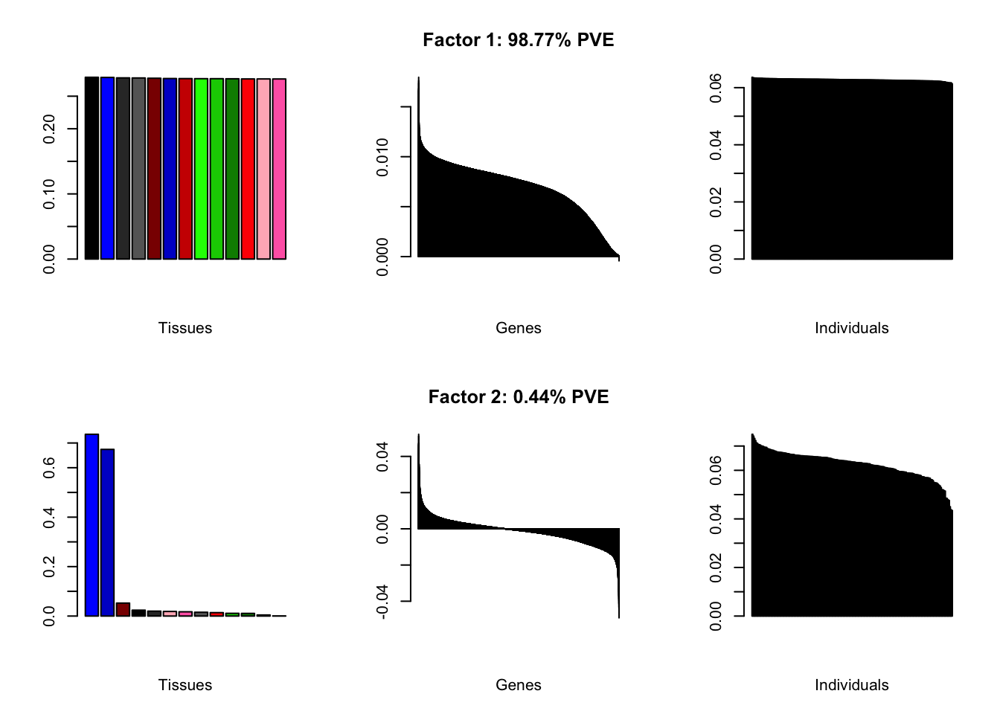
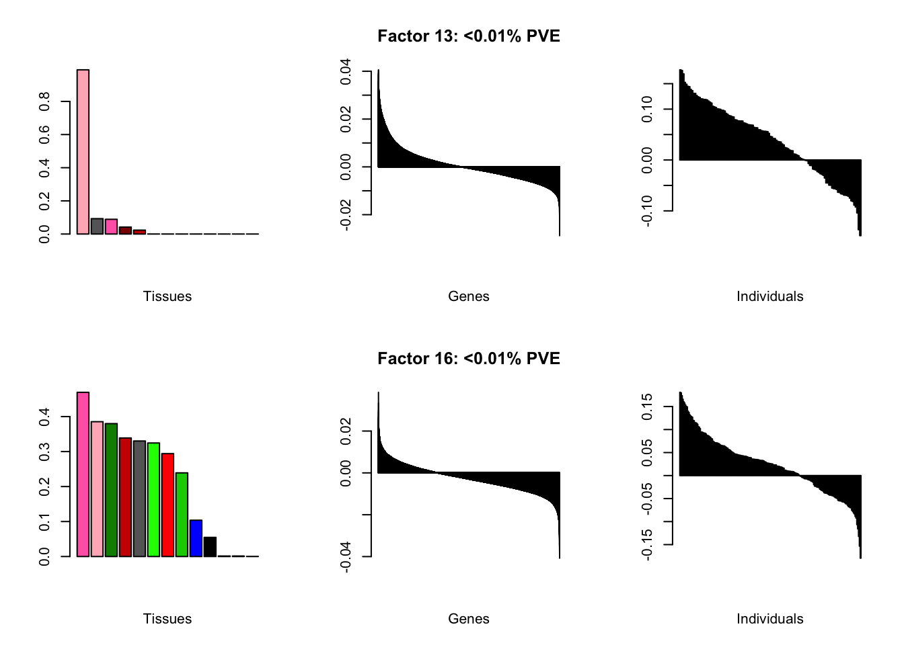
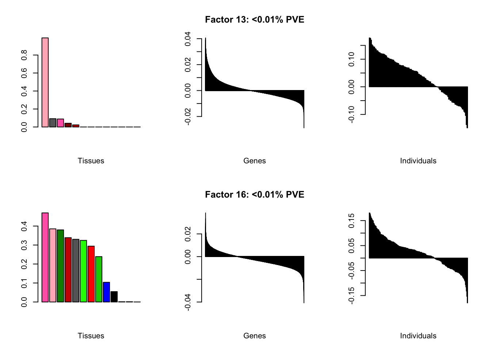

Tensor Decomposition of GTEx brain data
Jason Willwerscheid
1/8/2019
Last updated: 2019-01-15
workflowr checks: (Click a bullet for more information)-
✔ R Markdown file: up-to-date
Great! Since the R Markdown file has been committed to the Git repository, you know the exact version of the code that produced these results.
-
✔ Environment: empty
Great job! The global environment was empty. Objects defined in the global environment can affect the analysis in your R Markdown file in unknown ways. For reproduciblity it’s best to always run the code in an empty environment.
-
✔ Seed:
set.seed(20180714)The command
set.seed(20180714)was run prior to running the code in the R Markdown file. Setting a seed ensures that any results that rely on randomness, e.g. subsampling or permutations, are reproducible. -
✔ Session information: recorded
Great job! Recording the operating system, R version, and package versions is critical for reproducibility.
-
Great! You are using Git for version control. Tracking code development and connecting the code version to the results is critical for reproducibility. The version displayed above was the version of the Git repository at the time these results were generated.✔ Repository version: e6a881c
Note that you need to be careful to ensure that all relevant files for the analysis have been committed to Git prior to generating the results (you can usewflow_publishorwflow_git_commit). workflowr only checks the R Markdown file, but you know if there are other scripts or data files that it depends on. Below is the status of the Git repository when the results were generated:
Note that any generated files, e.g. HTML, png, CSS, etc., are not included in this status report because it is ok for generated content to have uncommitted changes.Ignored files: Ignored: .DS_Store Ignored: .Rhistory Ignored: .Rproj.user/ Ignored: analysis/figure/ Ignored: docs/.DS_Store Ignored: docs/figure/.DS_Store Untracked files: Untracked: analysis/gd_notes.Rmd Untracked: data/brain/brain2f_nm.rds Untracked: data/brain/brain2f_nn.rds Untracked: data/brain/brain2f_nz.rds Unstaged changes: Modified: analysis/index.Rmd
Expand here to see past versions:
Data
TODO: describe data here.
Code
for preprocessing GTEx data and fitting flash objects to the brain subtensor…
# Download GTEx data from GTEx Portal and load into R using Peter's code ------
samples.file <- "https://storage.googleapis.com/gtex_analysis_v7/annotations/GTEx_v7_Annotations_SampleAttributesDS.txt"
read.counts.file <- "~/Downloads/GTEx_Analysis_2016-01-15_v7_RNASeQCv1.1.8_gene_reads.gct.gz"
source("https://raw.githubusercontent.com/stephenslab/topics/master/code/gtex.R?token=AWTMG_VIxH9P52pyv6O3a3tRQEFn0F9Zks5cN431wA%3D%3D")
gtex <- read.gtex.data(samples.file, read.counts.file)
# Pre-process the data as described in Wang, Fischer, and Song (2017) ---------
# "Normalization was performed using the size factors produced by the
# estimateSizeFactors function of DESeq2."
# Calculate the (logged) geometric means of the counts for each gene.
gene.geom.means <- apply(gtex$counts, 2, function(x) {
if (all(x == 0)) {-Inf} else {sum(log(x[x > 0])) / length(x)}
})
# Take the median of the normalized counts for each sample:
size.factors <- apply(gtex$counts, 1, function(x) {
exp(median((log(x) - gene.geom.means)[x > 0]))
})
# Normalize the samples:
gtex$counts <- apply(gtex$counts, 2, `/`, size.factors)
# "We required at least 15 samples to include a given tissue and an average of
# at least 500 normalized reads in one or more tissues to retain a gene."
tissues.to.include <- names(which(table(gtex$samples$specific) > 14))
samples.to.retain <- samples$specific %in% tissues.to.include
gtex$counts <- gtex$counts[samples.to.retain, ]
gtex$samples <- gtex$samples[samples.to.retain, ]
gene.max.avg.reads <- apply(gtex$counts, 2, function(x) {
max(aggregate(x, by = list(gtex$samples$specific), FUN = mean)$x)
})
genes.to.retain <- gene.max.avg.reads > 500
gtex$counts <- gtex$counts[, genes.to.retain]
# Log-transform data:
gtex$counts <- log1p(gtex$counts)
# Convert the data from a matrix to a tissue x individual x gene array --------
individual <- as.factor(sapply(strsplit(rownames(gtex$counts), "-"), function(x) {
paste(x[1:2], collapse = "-")
}))
gtex.df <- data.frame(individual = individual,
tissue = droplevels(gtex$samples$specific))
gtex.df <- cbind(gtex.df, gtex$counts)
gtex <- reshape2::melt(gtex.df)
colnames(gtex)[3] <- "gene"
rm(gtex.df)
gtex <- reshape2::acast(gtex, tissue ~ individual ~ gene)
# object size: 4.6 Gb (a 49 x 714 x 17792 array)
saveRDS(gtex, "~/Downloads/gtex_v7_array.rds") # temporary
# Create smaller array using only brain tissues -------------------------------
brain.tissues <- which(substr(dimnames(gtex)[[1]], 1, 5) == "brain")
brain <- gtex[brain.tissues, , ]
# Remove individuals with no brains:
brain <- brain[, apply(brain, 2, function(x) sum(!is.na(x))) > 0, ]
# object size: 450 Mb (a 13 x 254 x 17792 array)
saveRDS(brain, "~/Downloads/gtex_v7_brain.rds") # temporary
# Fit flash object ------------------------------------------------------------
devtools::load_all("~/Github/ashr")
devtools::load_all("~/Github/flashier")
devtools::load_all("~/Github/ebnm")
brain <- set.flash.data(brain) # object size: 675 Mb
brain.flash <- flashier(brain,
var.type = 3,
prior.type = c("nonnegative", "nonzero.mode", "normal.mix"),
conv.crit.fn = function(new, old, k) {
flashier:::calc.max.abs.chg.EF(new, old, k, n = 1)
},
greedy.Kmax = 10,
greedy.tol = 5e-4,
backfit.after = 2,
backfit.every = 1,
inner.backfit.maxiter = 1,
ash.param = list(optmethod = "mixSQP"),
nonmissing.thresh = c(0, 0.05, 0),
verbose = "O L1 E2")
saveRDS(brain.flash, "~/Downloads/brain_flash.rds") # temporary
brain.flash <- flashier(brain,
flash.init = brain.flash,
backfit = "only",
backfit.order = "dropout",
conv.crit.fn = function(new, old, k) {
flashier:::calc.max.abs.chg.EF(new, old, k, n = 1)
},
backfit.tol = 5e-4,
verbose = "O L1 E2")
saveRDS(brain.flash, "~/Downloads/brain_flash_bf.rds") # temporary
# Remove large fields from flash object.
brain.flash$fit$Y <- NULL
brain.flash$fit$Z <- NULL
brain.flash$sampler <- NULL
saveRDS(brain.flash, "./data/brain/brain05.rds")
# Other "brain" objects were created using different settings for
# nonmissing.thresh.
# Create data frame containing demographics and technical factors -------------
phenotypes <- readRDS("~/Downloads/GTEx_v7_Subjects.rds")
class(phenotypes) <- "data.frame"
rownames(phenotypes) <- phenotypes$SUBJID
phenotypes <- phenotypes[, -1]
# Get subset corresponding to individuals with brains.
phenotypes <- phenotypes[rownames(brain.flash$loadings$normalized.loadings[[2]]), ]
# Remove COHORT because they're all postmortem.
phenotypes <- phenotypes[, -1]
# Remove ETHNCTY because there are no hispanics.
phenotypes <- phenotypes[, -4]
samples <- readr::read_delim("https://storage.googleapis.com/gtex_analysis_v7/annotations/GTEx_v7_Annotations_SampleAttributesDS.txt",
delim = "\t")
samples <- samples[, c("SAMPID", "SMGEBTCHD")]
# Extract individuals from sample IDs.
samples$SAMPID <- sapply(lapply(strsplit(samples$SAMPID, "-"), `[`, 1:2),
paste, collapse = "-")
# Convert sequencing date to number of days after first sequencing date.
samples$SMGEBTCHD <- as.numeric(as.POSIXct(samples$SMGEBTCHD, format = "%m/%d/%Y"))
samples$SMGEBTCHD <- samples$SMGEBTCHD - min(samples$SMGEBTCHD, na.rm = TRUE)
samples$SMGEBTCHD <- samples$SMGEBTCHD / (60 * 60 * 24)
SEQDATE <- aggregate(SMGEBTCHD ~ SAMPID, data = samples,
FUN = mean, na.rm = TRUE)
rownames(SEQDATE) <- SEQDATE$SAMPID
SEQDATE <- SEQDATE[, 2, drop = FALSE]
SEQDATE <- SEQDATE[rownames(brain.flash$loadings$normalized.loadings[[2]]), ]
all.covar <- cbind(phenotypes, SEQDATE)
# Do not upload to GitHub (data includes protected attributes!)
saveRDS(all.covar, "~/Downloads/GTEx_v7_brain_covar.rds")…and for producing the plots and tables below.
# Flip signs so that individual loadings are mostly postive -------------------
align.data <- function(brain) {
for (k in 1:brain$n.factors) {
if (mean(brain$loadings$normalized.loadings[[2]][, k]) < 0) {
brain$loadings$normalized.loadings[[2]][, k] <- -1 *
brain$loadings$normalized.loadings[[2]][, k]
brain$loadings$normalized.loadings[[3]][, k] <- -1 *
brain$loadings$normalized.loadings[[3]][, k]
}
}
return(brain)
}
# Barplots --------------------------------------------------------------------
do.plots <- function(brain, k, incl.gene.plot = TRUE, fix.ind.ylim = FALSE,
remove.exclusions = TRUE) {
brain.colors <- c("hotpink", "gray40", "green3", "blue1", "blue3",
"gray20", "black", "lightpink", "red1", "green4",
"green1", "red4", "red3")
tissue.idx <- order(brain$loadings$normalized.loadings[[1]][, k],
decreasing = TRUE)
barplot(brain$loadings$normalized.loadings[[1]][tissue.idx, k],
col = brain.colors[tissue.idx],
axisnames = FALSE,
xlab = "Tissues")
if (incl.gene.plot) {
if (brain$pve[k] < 1e-4) {
pve.str <- "<0.01% PVE"
} else {
pve.str <- paste0(100 * round(brain$pve[k], 4), "% PVE")
}
barplot(sort(brain$loadings$normalized.loadings[[3]][, k],
decreasing = TRUE),
axisnames = FALSE,
xlab = "Genes",
main = paste0("Factor ", k, ": ", pve.str))
}
vals <- brain$loadings$normalized.loadings[[2]][, k]
if (remove.exclusions) {
exclusions <- brain$fit$exclusions[[k]][[2]]
if (length(exclusions) > 0)
vals <- vals[-exclusions]
}
ylim <- NULL
if (fix.ind.ylim)
ylim <- c(-0.15, 0.25)
barplot(sort(vals, decreasing = TRUE),
axisnames = FALSE,
xlab = "Individuals",
ylim = ylim)
}
all.plots <- function(brain, remove.exclusions = TRUE) {
par(mfrow = c(2, 3))
for (k in order(brain$pve, decreasing = TRUE)) {
do.plots(brain, k, remove.exclusions = remove.exclusions)
}
}
all.plots.comparison <- function(brain1, brain2) {
par(mfrow = c(2, 4))
for (k in 1:brain1$n.factors) {
do.plots(brain1, k, incl.gene.plot = FALSE, fix.ind.ylim = TRUE)
do.plots(brain2, k, incl.gene.plot = FALSE, fix.ind.ylim = TRUE)
}
}
# Top tissues and genes -------------------------------------------------------
get.top.tissues <- function(brain, k) {
tissue.names <- c("amygdala", "ac cortex", "caudate bg",
"cerebellar hemisphere", "cerebellum",
"cortex", "fr cortex", "hippocampus",
"hypothalamus", "nuc acc bg", "putamen bg",
"spinal cord", "substantia nigra")
loadings <- round(brain$loadings$normalized.loadings[[1]][, k], 2)
tissue.labels <- paste0(tissue.names, " (", loadings, ")")
n.tissues <- sum(loadings > 0.1)
if (n.tissues > 6)
return("most tissues")
tissue.idx <- order(loadings, decreasing = TRUE)[1:n.tissues]
return(paste(tissue.labels[tissue.idx], collapse = ", "))
}
get.top.go <- function(brain, k, n.loadings = 200) {
loadings <- brain$loadings$normalized.loadings[[3]][, k]
names(loadings) <- sapply(strsplit(names(loadings), ".", fixed = TRUE),
`[`, 1)
overexpressed <- names(sort(loadings, decreasing = TRUE)[1:n.loadings])
cp.res <- clusterProfiler::enrichGO(overexpressed, "org.Hs.eg.db",
ont = "BP", keyType = "ENSEMBL",
universe = names(loadings),
minGSSize = 10)
over <- paste(head(cp.res, 3)$Description, collapse = ", ")
if (k == 1) {
under <- NA
} else {
underexpressed <- names(sort(loadings, decreasing = FALSE)[1:n.loadings])
cp.res2 <- clusterProfiler::enrichGO(underexpressed, "org.Hs.eg.db",
ont = "BP", keyType = "ENSEMBL",
universe = names(loadings),
minGSSize = 10)
under <- paste(head(cp.res2, 3)$Description, collapse = ", ")
}
list(over = over, under = under)
}
# Regression on demographic and technical variables ---------------------------
do.regression <- function(brain, covar, k) {
excl <- brain$fit$exclusions[[k]][[2]]
loadings <- brain$loadings$normalized.loadings[[2]][, k]
if (length(excl) > 0) {
covar <- covar[-excl, ]
loadings <- loadings[-excl]
}
df <- cbind(covar, loadings = loadings)
mod <- lm(loadings ~ ., data = df)
p.vals <- coefficients(summary(mod))[-1, 4]
p.vals <- ifelse(p.vals < 0.01,
formatC(p.vals, digits = 1, format = "e"),
round(p.vals, digits = 2))
sex.col <- which(substr(names(p.vals), 1, 3) == "SEX")
age.col <- which(substr(names(p.vals), 1, 3) == "AGE")
race.col <- which(substr(names(p.vals), 1, 4) == "RACE")
tech.col <- (1:length(p.vals))[-c(sex.col, age.col, race.col)]
mod.anova <- anova(mod)
ss <- sum(mod.anova$`Sum Sq`)
sex.pve <- mod.anova["SEX", ]$`Sum Sq` / ss
age.pve <- mod.anova["AGE", ]$`Sum Sq` / ss
race.pve <- mod.anova["RACE", ]$`Sum Sq` / ss
tech.pve <- sum(mod.anova[c("DTHVNT", "TRISCHD",
"logTRISCHD", "SEQDATE"), ]$`Sum Sq`) / ss
sex.res <- paste0("PVE: ", 100 * round(sex.pve, 4), "% (p: ",
paste(p.vals[sex.col], collapse = ", "), ")")
age.res <- paste0("PVE: ", 100 * round(age.pve, 4), "% (p: ",
paste(p.vals[age.col], collapse = ", "), ")")
race.res <- paste0("PVE: ", 100 * round(race.pve, 4), "% (p: ",
paste(p.vals[race.col], collapse = ", "), ")")
tech.res <- paste0("PVE: ", 100 * round(tech.pve, 4), "% (p: ",
paste(p.vals[tech.col], collapse = ", "), ")")
return(list(sex = sex.res, age = age.res, race = race.res, tech = tech.res))
}
# Table of results ------------------------------------------------------------
do.table <- function(brain, covar, k) {
top.go <- get.top.go(brain, k)
regress.res <- do.regression(brain, covar, k)
tabl <- rbind(c("PVE: ", paste0(100 * round(brain$pve[k], 4), "%")),
c("top tissues: ", get.top.tissues(brain, k)),
c("overexpressed: ", top.go$over),
c("underexpressed: ", top.go$under),
c("age effect: ", regress.res$age),
c("sex effect: ", regress.res$sex),
c("race effect: ", regress.res$race),
c("technical factors:", regress.res$tech))
return(tabl)
}
all.tables <- function(brain, covar) {
cat("\n")
for (k in order(brain$pve, decreasing = TRUE)) {
print(knitr::kable(do.table(brain, covar, k),
caption = paste("Factor", k)))
cat("\n")
}
}A first attempt
At first, results look good. Different factors clearly correspond to different types of brain tissue. But there are problems….
brain00 <- readRDS("./data/brain/brain00.rds")
brain00 <- align.data(brain00)
all.plots(brain00)Expand here to see past versions of firstAttempt-1.png:
| Version | Author | Date |
|---|---|---|
| 88534f8 | Jason Willwerscheid | 2019-01-11 |
Expand here to see past versions of firstAttempt-2.png:
| Version | Author | Date |
|---|---|---|
| 88534f8 | Jason Willwerscheid | 2019-01-11 |
Expand here to see past versions of firstAttempt-3.png:
| Version | Author | Date |
|---|---|---|
| 88534f8 | Jason Willwerscheid | 2019-01-11 |
Expand here to see past versions of firstAttempt-4.png:
| Version | Author | Date |
|---|---|---|
| 88534f8 | Jason Willwerscheid | 2019-01-11 |
Expand here to see past versions of firstAttempt-5.png:
| Version | Author | Date |
|---|---|---|
| 88534f8 | Jason Willwerscheid | 2019-01-11 |
Using a nonmissingness threshold
Loadings on individuals and factor PVEs look much better.
brain05 <- readRDS("./data/brain/brain05.rds")
brain05 <- align.data(brain05)
brain001 <- readRDS("./data/brain/brain001.rds")
brain001 <- align.data(brain001)
all.plots(brain05)
Expand here to see past versions of brain05-1.png:
| Version | Author | Date |
|---|---|---|
| 88534f8 | Jason Willwerscheid | 2019-01-11 |
Expand here to see past versions of brain05-2.png:
| Version | Author | Date |
|---|---|---|
| 88534f8 | Jason Willwerscheid | 2019-01-11 |
Expand here to see past versions of brain05-3.png:
| Version | Author | Date |
|---|---|---|
| 88534f8 | Jason Willwerscheid | 2019-01-11 |
Expand here to see past versions of brain05-4.png:
| Version | Author | Date |
|---|---|---|
| 88534f8 | Jason Willwerscheid | 2019-01-11 |
Expand here to see past versions of brain05-5.png:
| Version | Author | Date |
|---|---|---|
| 88534f8 | Jason Willwerscheid | 2019-01-11 |
Factor details (10 factors)
Note, in particular, the large differences from the paper in proportions of variance explained by demographic effects.
covar <- readRDS("~/Downloads/GTEx_v7_brain_covar.rds")
# Two of the race levels only have one tissue each, so I remove them.
covar$RACE[covar$RACE %in% c(1, 4)] <- NA
covar$RACE <- droplevels(covar$RACE)
all.tables(brain05, covar)
#>
#> Loading required package: org.Hs.eg.db
#> Loading required package: AnnotationDbi
#> Loading required package: stats4
#> Loading required package: BiocGenerics
#> Loading required package: parallel
#>
#> Attaching package: 'BiocGenerics'
#> The following objects are masked from 'package:parallel':
#>
#> clusterApply, clusterApplyLB, clusterCall, clusterEvalQ,
#> clusterExport, clusterMap, parApply, parCapply, parLapply,
#> parLapplyLB, parRapply, parSapply, parSapplyLB
#> The following objects are masked from 'package:stats':
#>
#> IQR, mad, sd, var, xtabs
#> The following objects are masked from 'package:base':
#>
#> anyDuplicated, append, as.data.frame, cbind, colMeans,
#> colnames, colSums, do.call, duplicated, eval, evalq, Filter,
#> Find, get, grep, grepl, intersect, is.unsorted, lapply,
#> lengths, Map, mapply, match, mget, order, paste, pmax,
#> pmax.int, pmin, pmin.int, Position, rank, rbind, Reduce,
#> rowMeans, rownames, rowSums, sapply, setdiff, sort, table,
#> tapply, union, unique, unsplit, which, which.max, which.min
#> Loading required package: Biobase
#> Welcome to Bioconductor
#>
#> Vignettes contain introductory material; view with
#> 'browseVignettes()'. To cite Bioconductor, see
#> 'citation("Biobase")', and for packages 'citation("pkgname")'.
#> Loading required package: IRanges
#> Loading required package: S4Vectors
#>
#> Attaching package: 'S4Vectors'
#> The following object is masked from 'package:base':
#>
#> expand.grid
#> | PVE: | 98.77% |
| top tissues: | most tissues |
| overexpressed: | SRP-dependent cotranslational protein targeting to membrane, establishment of protein localization to membrane, cotranslational protein targeting to membrane |
| underexpressed: | NA |
| age effect: | PVE: 2.31% (p: 8.2e-03) |
| sex effect: | PVE: 0.86% (p: 0.25) |
| race effect: | PVE: 0.02% (p: 0.69) |
| technical factors: | PVE: 3.96% (p: 0.02, 0.43, 0.4, 0.15) |
| PVE: | 0.44% |
| top tissues: | cerebellar hemisphere (0.74), cerebellum (0.67) |
| overexpressed: | |
| underexpressed: | telencephalon development, forebrain development, forebrain generation of neurons |
| age effect: | PVE: 0.12% (p: 0.89) |
| sex effect: | PVE: 2.18% (p: 0.11) |
| race effect: | PVE: 0.07% (p: 0.71) |
| technical factors: | PVE: 6.72% (p: 0.22, 0.78, 0.74, 0.65) |
| PVE: | 0.19% |
| top tissues: | spinal cord (0.81), substantia nigra (0.41), hypothalamus (0.31), hippocampus (0.19), putamen bg (0.13) |
| overexpressed: | skeletal system development, embryonic skeletal system development, anterior/posterior pattern specification |
| underexpressed: | telencephalon development, regulation of neurotransmitter levels, neurotransmitter transport |
| age effect: | PVE: 1.01% (p: 0.27) |
| sex effect: | PVE: 1.95% (p: 0.12) |
| race effect: | PVE: 0.07% (p: 0.68) |
| technical factors: | PVE: 5.77% (p: 0.5, 0.09, 0.04, 0.42) |
| PVE: | 0.11% |
| top tissues: | fr cortex (0.65), cortex (0.54), ac cortex (0.46), hippocampus (0.22), amygdala (0.12) |
| overexpressed: | potassium ion transport, fear response, regulation of membrane potential |
| underexpressed: | sensory perception, pattern specification process, nephron tubule development |
| age effect: | PVE: 5.31% (p: 1.5e-03) |
| sex effect: | PVE: 2.31% (p: 0.02) |
| race effect: | PVE: 0.12% (p: 0.53) |
| technical factors: | PVE: 4.5% (p: 0.41, 0.06, 0.06, 5.6e-03) |
| PVE: | 0.06% |
| top tissues: | nuc acc bg (0.66), caudate bg (0.57), putamen bg (0.46), spinal cord (0.13) |
| overexpressed: | behavior, associative learning, learning or memory |
| underexpressed: | forebrain development, cyclic-nucleotide-mediated signaling, second-messenger-mediated signaling |
| age effect: | PVE: 0.03% (p: 0.77) |
| sex effect: | PVE: 0.4% (p: 0.51) |
| race effect: | PVE: 0.09% (p: 0.68) |
| technical factors: | PVE: 3.67% (p: 0.1, 0.15, 0.11, 0.64) |
| PVE: | 0.04% |
| top tissues: | hypothalamus (0.96), substantia nigra (0.21), nuc acc bg (0.17) |
| overexpressed: | behavior, signal release, neuropeptide signaling pathway |
| underexpressed: | ensheathment of neurons, axon ensheathment, myelination |
| age effect: | PVE: 0.25% (p: 0.73) |
| sex effect: | PVE: 0.26% (p: 0.76) |
| race effect: | PVE: 0.05% (p: 0.76) |
| technical factors: | PVE: 4.47% (p: 0.62, 0.34, 0.27, 0.04) |
| PVE: | 0.04% |
| top tissues: | most tissues |
| overexpressed: | bicarbonate transport, neutrophil chemotaxis, leukocyte migration |
| underexpressed: | neurotransmitter transport, modulation of chemical synaptic transmission, synaptic vesicle cycle |
| age effect: | PVE: 7.24% (p: 6.3e-04) |
| sex effect: | PVE: 0.23% (p: 0.38) |
| race effect: | PVE: 0.11% (p: 0.64) |
| technical factors: | PVE: 2.98% (p: 0.52, 0.71, 0.56, 0.02) |
| PVE: | 0.03% |
| top tissues: | most tissues |
| overexpressed: | positive regulation of response to external stimulus, regulation of receptor activity, L-glutamate transport |
| underexpressed: | cell-matrix adhesion |
| age effect: | PVE: 3.32% (p: 0.01) |
| sex effect: | PVE: 0.33% (p: 0.56) |
| race effect: | PVE: 0.4% (p: 0.45) |
| technical factors: | PVE: 8.4% (p: 0.29, 0.14, 0.04, 0.97) |
| PVE: | 0.03% |
| top tissues: | most tissues |
| overexpressed: | regulation of receptor activity |
| underexpressed: | neutrophil activation, granulocyte activation, neutrophil mediated immunity |
| age effect: | PVE: 0.28% (p: 0.12) |
| sex effect: | PVE: 2.28% (p: 0.06) |
| race effect: | PVE: 1.64% (p: 0.07) |
| technical factors: | PVE: 19.29% (p: 0.62, 0.12, 0.06, 1.2e-09) |
| PVE: | 0.02% |
| top tissues: | most tissues |
| overexpressed: | response to lipopolysaccharide, regulation of angiogenesis, response to molecule of bacterial origin |
| underexpressed: | |
| age effect: | PVE: 6.13% (p: 3.0e-04) |
| sex effect: | PVE: 0.14% (p: 0.54) |
| race effect: | PVE: 0.34% (p: 0.34) |
| technical factors: | PVE: 2.65% (p: 0.03, 0.94, 0.97, 0.2) |
Choosing a class of priors
Below are loadings obtained by putting normal.mixture, nonnegative, and nonzero.mode priors on individual loadings.
brain2f.nm <- align.data(readRDS("./data/brain/brain2f_nm.rds"))
brain2f.nn <- align.data(readRDS("./data/brain/brain2f_nn.rds"))
brain2f.nz <- align.data(readRDS("./data/brain/brain2f_nz.rds"))
all.plots(brain2f.nm, remove.exclusions = FALSE)all.plots(brain2f.nn, remove.exclusions = FALSE)all.plots(brain2f.nz, remove.exclusions = FALSE)Varying the threshold
I compare the loadings obtained by setting the nonmissingness threshold to .05 (left) and .001 (right).
all.plots.comparison(brain05, brain001)Expand here to see past versions of compareThresh-1.png:
| Version | Author | Date |
|---|---|---|
| 88534f8 | Jason Willwerscheid | 2019-01-11 |
Expand here to see past versions of compareThresh-2.png:
| Version | Author | Date |
|---|---|---|
| 88534f8 | Jason Willwerscheid | 2019-01-11 |
Expand here to see past versions of compareThresh-3.png:
| Version | Author | Date |
|---|---|---|
| 88534f8 | Jason Willwerscheid | 2019-01-11 |
Expand here to see past versions of compareThresh-4.png:
| Version | Author | Date |
|---|---|---|
| 88534f8 | Jason Willwerscheid | 2019-01-11 |
Expand here to see past versions of compareThresh-5.png:
| Version | Author | Date |
|---|---|---|
| 88534f8 | Jason Willwerscheid | 2019-01-11 |
Increasing the number of factors
I add another 10 factors to the brain05 flash object and backfit.
brain20f <- readRDS("./data/brain/brain20f.rds")
brain20f <- align.data(brain20f)
all.plots(brain20f) 

Factor details (20 factors)
all.tables(brain20f, covar)| PVE: | 98.73% |
| top tissues: | most tissues |
| overexpressed: | SRP-dependent cotranslational protein targeting to membrane, establishment of protein localization to membrane, cotranslational protein targeting to membrane |
| underexpressed: | NA |
| age effect: | PVE: 0.22% (p: 0.39) |
| sex effect: | PVE: 1.3% (p: 0.12) |
| race effect: | PVE: 0.48% (p: 0.36) |
| technical factors: | PVE: 4.84% (p: 0.02, 0.92, 0.97, 0.04) |
| PVE: | 0.45% |
| top tissues: | cerebellar hemisphere (0.74), cerebellum (0.67) |
| overexpressed: | |
| underexpressed: | telencephalon development, forebrain development, learning |
| age effect: | PVE: 0.01% (p: 0.85) |
| sex effect: | PVE: 1.77% (p: 0.16) |
| race effect: | PVE: 0.01% (p: 0.9) |
| technical factors: | PVE: 6.93% (p: 0.44, 0.84, 0.65, 0.67) |
| PVE: | 0.16% |
| top tissues: | spinal cord (0.83), substantia nigra (0.43), hypothalamus (0.28), putamen bg (0.12) |
| overexpressed: | embryonic skeletal system development, anterior/posterior pattern specification, skeletal system development |
| underexpressed: | regulation of neurotransmitter levels, forebrain development, telencephalon development |
| age effect: | PVE: 1.18% (p: 0.31) |
| sex effect: | PVE: 1.94% (p: 0.15) |
| race effect: | PVE: 0.18% (p: 0.5) |
| technical factors: | PVE: 6.26% (p: 0.62, 0.1, 0.04, 0.12) |
| PVE: | 0.11% |
| top tissues: | fr cortex (0.68), cortex (0.54), ac cortex (0.47) |
| overexpressed: | potassium ion transport, monovalent inorganic cation transport, acid secretion |
| underexpressed: | pattern specification process, sensory perception, proximal/distal pattern formation |
| age effect: | PVE: 3.17% (p: 0.01) |
| sex effect: | PVE: 1.73% (p: 0.04) |
| race effect: | PVE: 0% (p: 0.96) |
| technical factors: | PVE: 3.39% (p: 0.78, 0.06, 0.06, 0.02) |
| PVE: | 0.07% |
| top tissues: | nuc acc bg (0.67), caudate bg (0.57), putamen bg (0.47) |
| overexpressed: | behavior, locomotory behavior, visual learning |
| underexpressed: | forebrain development, behavior, cyclic-nucleotide-mediated signaling |
| age effect: | PVE: 0.33% (p: 0.4) |
| sex effect: | PVE: 0.73% (p: 0.32) |
| race effect: | PVE: 0% (p: 0.95) |
| technical factors: | PVE: 2.24% (p: 0.28, 0.2, 0.16, 0.96) |
| PVE: | 0.04% |
| top tissues: | most tissues |
| overexpressed: | immune response-regulating signaling pathway, immune response-activating signal transduction, positive regulation of response to external stimulus |
| underexpressed: | potassium ion transport, arachidonic acid metabolic process, icosanoid metabolic process |
| age effect: | PVE: 0.46% (p: 0.44) |
| sex effect: | PVE: 0.23% (p: 0.74) |
| race effect: | PVE: 0.49% (p: 0.44) |
| technical factors: | PVE: 8.81% (p: 0.19, 0.93, 0.56, 0.38) |
| PVE: | 0.04% |
| top tissues: | hypothalamus (0.95), substantia nigra (0.25), nuc acc bg (0.14) |
| overexpressed: | behavior, neuropeptide signaling pathway, signal release |
| underexpressed: | ensheathment of neurons, axon ensheathment, myelination |
| age effect: | PVE: 0.05% (p: 0.69) |
| sex effect: | PVE: 0.84% (p: 0.49) |
| race effect: | PVE: 0.21% (p: 0.59) |
| technical factors: | PVE: 4.36% (p: 0.63, 0.31, 0.27, 0.04) |
| PVE: | 0.03% |
| top tissues: | most tissues |
| overexpressed: | regulation of JAK-STAT cascade, regulation of STAT cascade, JAK-STAT cascade |
| underexpressed: | neutrophil mediated immunity, neutrophil activation, granulocyte activation |
| age effect: | PVE: 0.12% (p: 0.19) |
| sex effect: | PVE: 2.64% (p: 0.04) |
| race effect: | PVE: 1.36% (p: 0.11) |
| technical factors: | PVE: 21.95% (p: 0.8, 0.32, 0.16, 1.5e-11) |
| PVE: | 0.03% |
| top tissues: | most tissues |
| overexpressed: | response to bacterium, response to lipopolysaccharide, response to molecule of bacterial origin |
| underexpressed: | |
| age effect: | PVE: 7.84% (p: 4.5e-05) |
| sex effect: | PVE: 0.48% (p: 0.3) |
| race effect: | PVE: 0.11% (p: 0.57) |
| technical factors: | PVE: 2.07% (p: 0.04, 0.86, 0.88, 0.29) |
| PVE: | 0.02% |
| top tissues: | hippocampus (0.88), amygdala (0.32), hypothalamus (0.28), spinal cord (0.2) |
| overexpressed: | axoneme assembly, axonemal dynein complex assembly, cilium movement |
| underexpressed: | neurotransmitter transport, sensory perception, locomotory behavior |
| age effect: | PVE: 1.5% (p: 0.45) |
| sex effect: | PVE: 1.57% (p: 0.29) |
| race effect: | PVE: 0.76% (p: 0.31) |
| technical factors: | PVE: 11.28% (p: 0.48, 0.98, 0.65, 2.2e-04) |
| PVE: | 0.02% |
| top tissues: | most tissues |
| overexpressed: | angiogenesis, regulation of angiogenesis, blood vessel morphogenesis |
| underexpressed: | gamma-aminobutyric acid signaling pathway, synaptic vesicle cycle, behavior |
| age effect: | PVE: 1.49% (p: 0.15) |
| sex effect: | PVE: 0.3% (p: 0.64) |
| race effect: | PVE: 0.5% (p: 0.34) |
| technical factors: | PVE: 5.32% (p: 0.73, 0.36, 0.33, 1.2e-03) |
| PVE: | 0.02% |
| top tissues: | substantia nigra (0.93), amygdala (0.26), nuc acc bg (0.24) |
| overexpressed: | leukocyte migration, angiogenesis, myeloid leukocyte migration |
| underexpressed: | synaptic vesicle cycle, neurotransmitter transport, amine transport |
| age effect: | PVE: 0.48% (p: 0.44) |
| sex effect: | PVE: 0.25% (p: 0.51) |
| race effect: | PVE: 0.01% (p: 0.81) |
| technical factors: | PVE: 3.81% (p: 0.04, 0.68, 0.92, 0.7) |
| PVE: | 0.01% |
| top tissues: | most tissues |
| overexpressed: | urogenital system development, sensory organ development, renal system development |
| underexpressed: | regulation of receptor activity, neuropeptide signaling pathway, regulation of system process |
| age effect: | PVE: 5.91% (p: 5.3e-04) |
| sex effect: | PVE: 3.86% (p: 1.4e-03) |
| race effect: | PVE: 0.7% (p: 0.17) |
| technical factors: | PVE: 1.56% (p: 0.17, 0.91, 0.7, 0.31) |
| PVE: | 0.01% |
| top tissues: | most tissues |
| overexpressed: | amine transport, sensory perception, regulation of ion transmembrane transport |
| underexpressed: | leukocyte migration, response to bacterium, leukocyte chemotaxis |
| age effect: | PVE: 0.49% (p: 0.71) |
| sex effect: | PVE: 0.24% (p: 0.61) |
| race effect: | PVE: 2.84% (p: 7.1e-03) |
| technical factors: | PVE: 8.3% (p: 9.0e-05, 0.95, 0.86, 4.9e-03) |
| PVE: | 0.01% |
| top tissues: | most tissues |
| overexpressed: | response to unfolded protein, response to topologically incorrect protein, protein folding |
| underexpressed: | regulation of leukocyte activation, regulation of cell activation, immune response-regulating signaling pathway |
| age effect: | PVE: 1.52% (p: 0.03) |
| sex effect: | PVE: 0.46% (p: 0.43) |
| race effect: | PVE: 0.34% (p: 0.37) |
| technical factors: | PVE: 4.55% (p: 0.03, 0.32, 0.32, 0.05) |
| PVE: | 0.01% |
| top tissues: | most tissues |
| overexpressed: | |
| underexpressed: | |
| age effect: | PVE: 0.05% (p: 0.47) |
| sex effect: | PVE: 86.18% (p: 3.3e-109) |
| race effect: | PVE: 0.08% (p: 0.27) |
| technical factors: | PVE: 1.04% (p: 0.01, 0.15, 0.39, 0.04) |
| PVE: | 0.01% |
| top tissues: | hippocampus (0.99) |
| overexpressed: | modulation of chemical synaptic transmission, synaptic vesicle cycle, neurotransmitter transport |
| underexpressed: | central nervous system myelination, axon ensheathment in central nervous system, ensheathment of neurons |
| age effect: | PVE: 10.75% (p: 7.2e-04) |
| sex effect: | PVE: 0.51% (p: 0.48) |
| race effect: | PVE: 4.75% (p: 0.01) |
| technical factors: | PVE: 2.42% (p: 0.8, 0.38, 0.3, 0.11) |
| PVE: | 0.01% |
| top tissues: | most tissues |
| overexpressed: | cytolysis, cell killing |
| underexpressed: | amino acid transmembrane import, amino acid import across plasma membrane, L-amino acid import |
| age effect: | PVE: 4.71% (p: 1.4e-03) |
| sex effect: | PVE: 0.85% (p: 0.2) |
| race effect: | PVE: 1.6% (p: 0.06) |
| technical factors: | PVE: 1.25% (p: 0.93, 0.29, 0.21, 0.37) |
| PVE: | 0% |
| top tissues: | caudate bg (0.68), amygdala (0.59), ac cortex (0.34), cerebellar hemisphere (0.22), putamen bg (0.13) |
| overexpressed: | axoneme assembly, cilium movement, microtubule bundle formation |
| underexpressed: | SRP-dependent cotranslational protein targeting to membrane, protein targeting to ER, cotranslational protein targeting to membrane |
| age effect: | PVE: 2.6% (p: 0.02) |
| sex effect: | PVE: 0.28% (p: 0.48) |
| race effect: | PVE: 0.89% (p: 0.24) |
| technical factors: | PVE: 2.32% (p: 0.83, 0.11, 0.07, 0.9) |
| PVE: | 0% |
| top tissues: | most tissues |
| overexpressed: | |
| underexpressed: | positive regulation of cytokine production, response to lipopolysaccharide, leukocyte cell-cell adhesion |
| age effect: | PVE: 0.61% (p: 0.08) |
| sex effect: | PVE: 1.56% (p: 0.03) |
| race effect: | PVE: 0.06% (p: 0.75) |
| technical factors: | PVE: 3.73% (p: 0.86, 0.07, 0.1, 0.04) |
Session information
sessionInfo()
#> R version 3.4.3 (2017-11-30)
#> Platform: x86_64-apple-darwin15.6.0 (64-bit)
#> Running under: macOS High Sierra 10.13.6
#>
#> Matrix products: default
#> BLAS: /Library/Frameworks/R.framework/Versions/3.4/Resources/lib/libRblas.0.dylib
#> LAPACK: /Library/Frameworks/R.framework/Versions/3.4/Resources/lib/libRlapack.dylib
#>
#> locale:
#> [1] en_US.UTF-8/en_US.UTF-8/en_US.UTF-8/C/en_US.UTF-8/en_US.UTF-8
#>
#> attached base packages:
#> [1] parallel stats4 stats graphics grDevices utils datasets
#> [8] methods base
#>
#> other attached packages:
#> [1] org.Hs.eg.db_3.5.0 AnnotationDbi_1.40.0 IRanges_2.12.0
#> [4] S4Vectors_0.16.0 Biobase_2.38.0 BiocGenerics_0.24.0
#>
#> loaded via a namespace (and not attached):
#> [1] qvalue_2.10.0 clusterProfiler_3.6.0 fgsea_1.4.1
#> [4] xfun_0.4 purrr_0.2.4 reshape2_1.4.3
#> [7] splines_3.4.3 colorspace_1.3-2 htmltools_0.3.6
#> [10] yaml_2.2.0 blob_1.1.0 rlang_0.3.0.1
#> [13] R.oo_1.21.0 pillar_1.2.1 glue_1.3.0
#> [16] DBI_0.7 R.utils_2.6.0 BiocParallel_1.12.0
#> [19] bit64_0.9-7 bindrcpp_0.2 rvcheck_0.1.3
#> [22] plyr_1.8.4 bindr_0.1 stringr_1.3.1
#> [25] munsell_0.5.0 GOSemSim_2.4.1 gtable_0.2.0
#> [28] workflowr_1.0.1 flashier_0.1.0 R.methodsS3_1.7.1
#> [31] memoise_1.1.0 evaluate_0.12 knitr_1.21.6
#> [34] highr_0.7 Rcpp_1.0.0 backports_1.1.2
#> [37] scales_1.0.0 DO.db_2.9 bit_1.1-12
#> [40] gridExtra_2.3 fastmatch_1.1-0 ggplot2_3.1.0
#> [43] digest_0.6.18 stringi_1.2.4 dplyr_0.7.4
#> [46] rprojroot_1.3-2 grid_3.4.3 DOSE_3.4.0
#> [49] tools_3.4.3 magrittr_1.5 lazyeval_0.2.1
#> [52] tibble_1.4.2 RSQLite_2.0 tidyr_0.7.2
#> [55] whisker_0.3-2 GO.db_3.5.0 pkgconfig_2.0.1
#> [58] data.table_1.10.4-3 assertthat_0.2.0 rmarkdown_1.11
#> [61] R6_2.3.0 igraph_1.1.2 git2r_0.21.0
#> [64] compiler_3.4.3This reproducible R Markdown analysis was created with workflowr 1.0.1